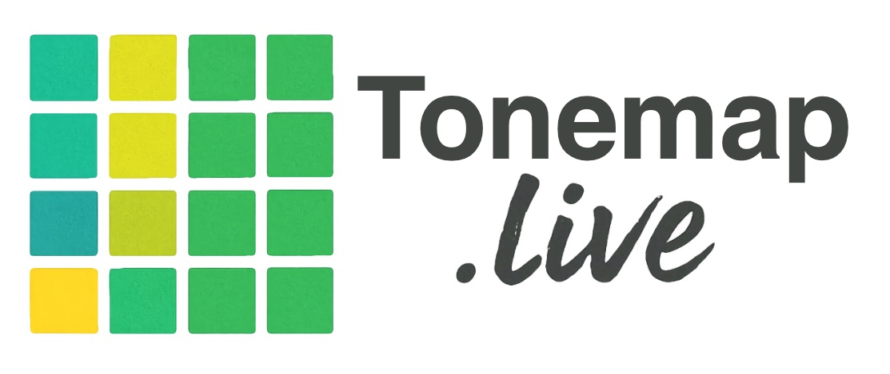

These Terms and Conditions govern your use of Tonemap ("the Service"), a web-based intonation visualization tool for musicians available at tonemap.live. By using the Service, you agree to these terms.
Tonemap is an independent, open-source project, designed by Jeremy Black. The source code is publicly available, the core tool is free to use, and a paid Pro tier exists solely to support its continued development.
Tonemap's core features are available free of charge with no account required. The free tier provides real-time pitch detection, color-grid visualization, Note View, and basic tuning options as described on the pricing page.
Tonemap Pro is an optional paid subscription available at $9.99 USD per year, providing access to extended features. A Pro subscription is how Tonemap stays independent: no advertising, no outside funding, no selling of user data. If you find the tool useful, Pro is the way to support it.
Subscriptions are billed annually and renew automatically unless cancelled. You may cancel at any time through your account portal or by contacting us. Cancellation takes effect at the end of the current billing period — you retain Pro access until then.
Payments are processed securely by Lemon Squeezy. Tonemap does not store your payment information.
If you are unsatisfied with your Tonemap Pro subscription, contact us within 30 days of purchase for a full refund. Requests after 30 days are considered on a case-by-case basis. To request a refund, email support@tonemap.live.
Tonemap is provided for personal, educational, and professional music practice purposes. You may not redistribute or replicate the Service as your own product except as allowed by the MIT license. You are responsible for ensuring your device and browser meet the requirements to use the Service (a modern browser with microphone access).
Tonemap processes audio input locally in your browser using the Web Audio API. Audio and usage data is never transmitted to or stored on our servers.
Basic, anonymized page-view statistics may be collected to understand how the tool is being used. No personally identifiable information is collected from free-tier users, and no data is sold or shared with third parties. Pro subscribers provide an email address and payment information solely for billing purposes; this is handled by Lemon Squeezy in accordance with their privacy policy.
Authentication cookie. When you activate a Tonemap Pro license, a strictly necessary cookie named tm_pro is set in your browser. This cookie contains a cryptographically signed token that proves your device has an active Pro license — it does not contain your name, email address, or any other personally identifiable information. The cookie is required to serve Pro content; the server cannot verify your device's authorization without it. Because it is strictly necessary to deliver the service you explicitly requested, it does not require a separate consent prompt under GDPR, the ePrivacy Directive, or comparable regulations. Your license may be activated on up to five devices simultaneously; you can deactivate a device at any time from within the app to free a slot. The cookie persists for up to one year and is refreshed automatically when your license is revalidated. Tonemap's server infrastructure runs on Cloudflare.
The Tonemap client-side source code is released under the MIT License. You are free to use, copy, modify, merge, publish, distribute, sublicense, or sell copies of the software, subject to the following condition: the above copyright notice and this permission notice must be included in all copies or substantial portions of the software.
The MIT License applies to the software code itself. It does not grant any rights to the Tonemap name, logo, or tonemap.live domain, and does not entitle anyone to a Tonemap Pro subscription without purchase. The code being open is intentional: you can read exactly how Tonemap handles your microphone input and verify that nothing leaves your device.
Tonemap™ is a trademark with a pending registration. All rights reserved. Use of the Tonemap name or mark in connection with any product, service, or domain requires express written permission.
THE SOFTWARE IS PROVIDED "AS IS", WITHOUT WARRANTY OF ANY KIND, EXPRESS OR IMPLIED, INCLUDING BUT NOT LIMITED TO THE WARRANTIES OF MERCHANTABILITY, FITNESS FOR A PARTICULAR PURPOSE, AND NONINFRINGEMENT. IN NO EVENT SHALL THE AUTHORS OR COPYRIGHT HOLDERS BE LIABLE FOR ANY CLAIM, DAMAGES, OR OTHER LIABILITY, WHETHER IN AN ACTION OF CONTRACT, TORT OR OTHERWISE, ARISING FROM, OUT OF, OR IN CONNECTION WITH THE SOFTWARE OR THE USE OR OTHER DEALINGS IN THE SOFTWARE.
Pitch detection accuracy depends on your device, microphone, and acoustic environment. We do not guarantee specific intonation analysis results.
To the maximum extent permitted by applicable law, Tonemap and its creator shall not be liable for any indirect, incidental, or consequential damages arising from your use of or inability to use the Service.
We may update these terms from time to time. Continued use of the Service after changes are posted constitutes your acceptance of the revised terms. The date at the top of this page indicates when the terms were last updated.
Questions about these terms or your subscription can be directed to support@tonemap.live.